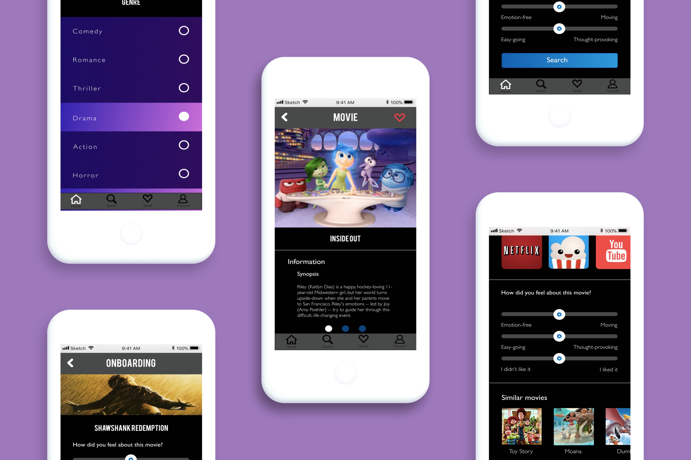

Feelm
Individual App Project - General Assembly - 2018
Create an app that will solve a classmate’s problem.
Initially suffered from Featuritis by trying to make an app that would help individuals discover new entertainment in general but this wasn’t specific enough.
I came up with an idea for an app that would help individuals to choose movies based on their mood, but also personalised.
This app will help individuals to enjoy the process of choosing a movie, and to be more satisfied with their choice.
2 weeks
UX Designer – Individual Project. My responsibilities included User interviews | Competitor analysis | Affinity mapping | Problem statements | Experience mapping | Storyboarding | Design studio | User flows | Wire-flows | Sketching | Prototyping | User testing | Branding | Moodboarding | Colour schemes| Typography
Post-its | Pen & Paper | Sharpies | Sketch | Marvel | Rainbow spreadsheet
The Brief
For this project, we were tasked to make an app that solves a problem that our classmate was facing. I talked to Colin, and there were several problem areas that could be addressed — but one thing caught my attention. I found out that he had a difficult time choosing entertainment he wanted to consume — whether it was movies, podcasts or tv shows.
Research
To understand whether this problem a bit further, I conducted user research. I gained some insight into people’s frustrations and behaviour when choosing entertainment. Main findings:
- People do not want to waste time researching for entertainment, or by choosing the wrong one to consume
- There is a lack of personalisation in recommendations on the entertainment platforms
- Mood dictates choice of material to consume
Affinity map to distil findings from user interviews
Competitor analysis - feature comparison
The Pivot
The original idea did not have a focus and tried to tackle entertainment
entertainment suggestion in general, ranging from podcasts to movies.
I was trying to solve too many problems.
I decided to focus on one problem :
“How might we make it easier to choose a movie based on the mood”
Problem Statement & Storyboard
Experience Maps
Experience map without app

Revised experience map with app
Design Studio Outputs
- Questions that users will answer to review different movies
- Mood sliders to assess and filter different movie options
- An AI component that will assess the information that users have given to provide personalised recommendations
Usability Testing
Conducting usability testing

Rainbow spreadsheet to record findings from usability tests
Screens where users answer movie rating questions at on-boarding
Filter screen
Movie information screen
Clickable Prototype
Click here to see the clickable mid-fi prototype
Moodboard
Colour Scheme
Typography
Hi-Fidelity Screens
Results
This app will help individuals to enjoy the process of choosing a movie, and be more effective in choosing a movie that they will enjoy.
Next steps:
- Find out the number of movies people will rate before getting bored
- Find a way to narrow down the movies that will be shown during on-boarding